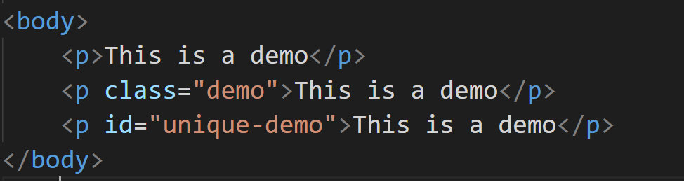
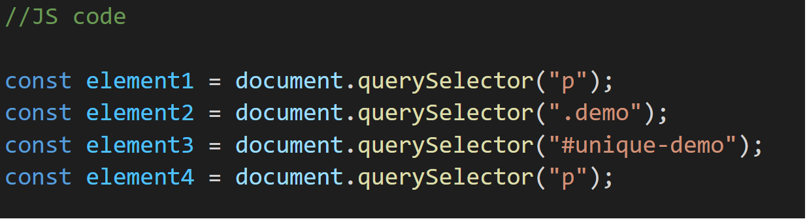

There are several ways to fetch HTML DOM element in Javascript variables.In this blog we will look into one of the most commonly used DOM method-"querySelector"
What is Query Selector?
Query selector is a DOM method in JS that returns the first element matched in the DOM tree.If there is no match found it returns null
Lets see using an example
 1.First querySelector returns the first paragraph element from HTML DOM tree and stores in element1.
2.Second querySelector searches for HTML element with class "demo" and returns it which is then stored in element2.
3.Third querySelector searches for HTML element with id "unique-demo" and returns it which is then stored in element3.
4.Fourth querySelector searches for all HTML paragraph elements and returns a nodeList with all p tags which is then stored in element4.